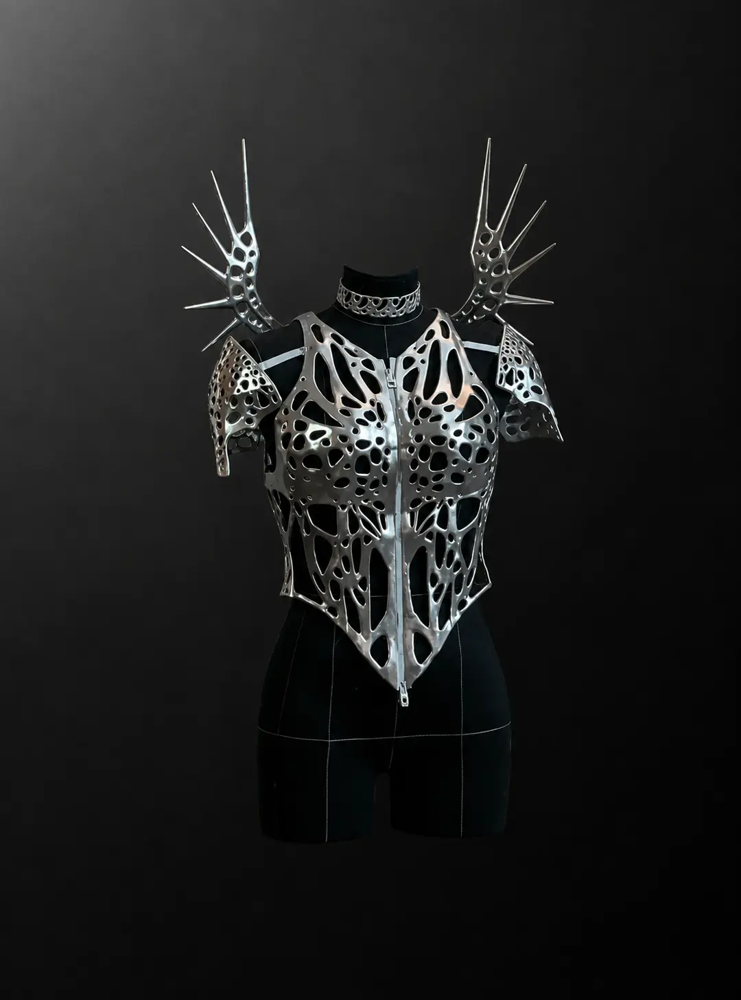
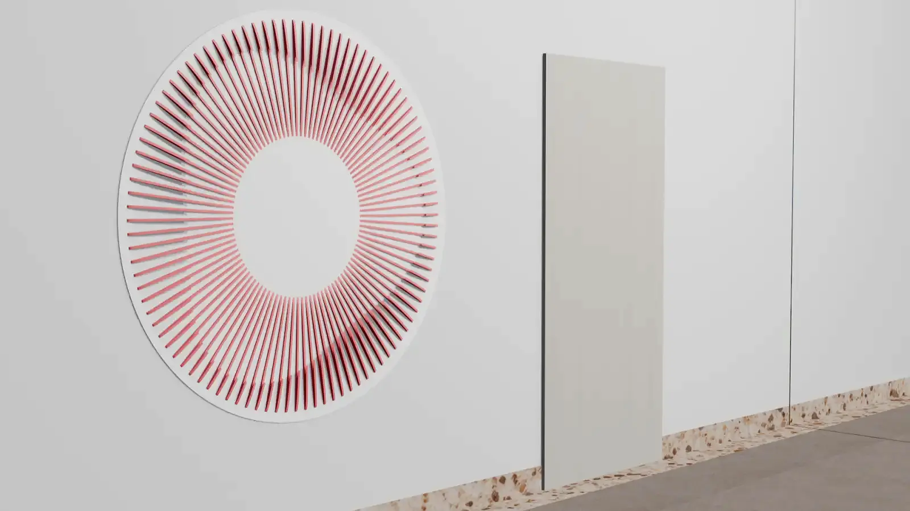

Реализовано013D-моделирование · 3D-печать · фэшн-тех
Сценический костюм Анны Плетнёвой
Проект представлен Технопарком РГСУ
- 2 видео процесса
- 9 этапов в галерее
02 / Направление лаборатории
Создаём 3D-модели по техническому заданию, чертежу, эскизу, фотографии или данным сканирования. Сразу учитываем, где модель будет использоваться: в производстве, визуализации, анимации или печати.
Обсудить задачу ↗Результат этапа
С чем можно обратиться
Как устроена работа
Фиксируем, для чего нужна модель, какие размеры и поверхности критичны и в каком формате потребуется результат.
Строим форму по чертежу, эскизу, фотографиям, референсам или данным 3D-сканирования.
Показываем контрольные ракурсы и проверяем модель по заранее определённым критериям.
Проверяем топологию, толщины, масштаб и экспортируем файлы под печать, производство или визуализацию.
Практика
Посмотрите примеры геометрии, производственных этапов и готовых изделий.

Реализовано013D-моделирование · 3D-печать · фэшн-тех
Проект представлен Технопарком РГСУ

Проектная разработка02Параметрический дизайн · интерьер
Проект представлен Технопарком РГСУ
Для оценки нужны назначение, габариты, исходные данные и желаемый срок. Состав работ и стоимость обсуждаем индивидуально.
Подготовить обращение ↗